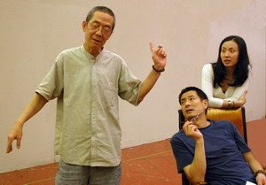

旧站自述
旧站写道：工作室于 1989 年成立，致力于创作当代戏剧精品。除制作林兆华的导演作品外，工作室还计划培养年轻戏剧创作者、组织和参与国际交流，并邀请海外艺术家来华培训和展演。
旧站还列举《哈姆雷特》《浮士德》《棋人》《三姊妹等待戈多》《故事新编》《查理三世》《樱桃园》等作品。

原站图片说明： 《建筑大师》林兆华、濮存昕和陶虹；摄影：杨春雁。
为什么保留“旧站语境”
这是一次档案型重构，而不是把 2006 年的网站假装成今天的网站。因此，历史票价、电话、演出日期、机构头衔等信息都以“当年资料”呈现；对于今天仍可能变化的机构状态，则不直接从旧站推断。
例如，旧站页面中的“演出进行中”实际指向 2006 年《建筑大师》的宣传期。新版将它归入历史档案，避免访客误以为这些演出仍在售票。